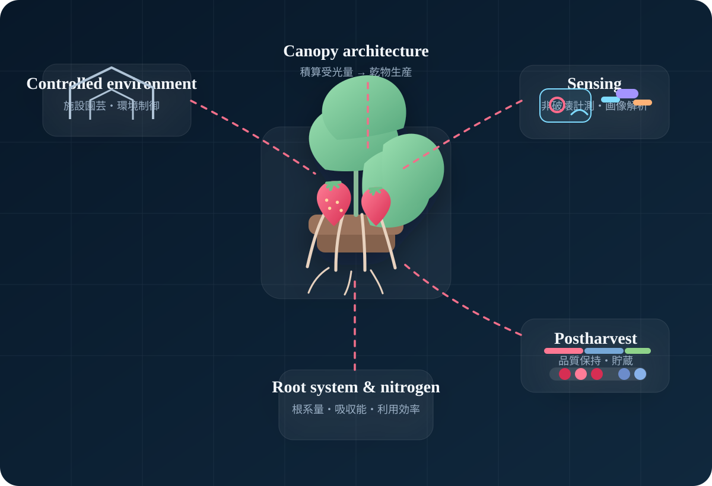

2013–14
FOUNDATION
多収性を地上部と地下部から解析
‘紅ほっぺ’の乾物生産・光合成、根量・根活性を解析した一連の研究が、現在まで続く多収性研究の基盤になりました。
HORTICULTURAL SCIENCE · PLANT PHYSIOLOGY · POSTHARVEST
イチゴを中心とした園芸作物の生産性を「受光・乾物生産・根・窒素吸収」から理解し、施設園芸、品質保持、非破壊計測へ展開する研究を進めています。
第32回国際園芸学会議 招待講演
多収性の生理解析と生産性向上技術
イチゴ超多収性品種のバイオマーカー開発
01 / RESEARCH CONCEPT
多収性の生理学から施設園芸、収穫後品質、センシングまで。研究を構成する要素を、実験結果とは切り分けたコンセプト図として示します。

FROM PHYSIOLOGY TO TECHNOLOGY
中心にあるのは、イチゴの多収性を生理学的に理解することです。葉群構造、受光、乾物生産、根系、窒素吸収を統合して捉え、その知見を環境制御、品質保持、非破壊計測へ展開します。
※ 後から画像ファイルを差し替えるだけで、実写写真や新しいAIイメージへ更新できます。
02 / ABOUT
園芸学を基盤に、植物の生理機構を理解し、その知見を実際の栽培・流通現場で役立つ技術へつなげることを目指しています。
主な研究対象はイチゴです。品種間でなぜ収量が異なるのかを、葉群構造、受光量、乾物生産、根系発達、窒素吸収・利用、光合成などの観点から解析しています。
さらに、CO₂施用などの施設園芸技術、オゾン・UV等による青果物の鮮度保持、ハイパースペクトル画像を含む非破壊計測へ研究を展開し、生産から収穫後までを横断して研究しています。
個々の生理現象を測るだけでなく、植物体全体の生産性へどうつながるかを考える。そして、その理解を栽培・育種・品質保持・センシングへ展開することを重視しています。
03 / RESEARCH
基礎生理から栽培・流通技術まで、4つの研究軸を中心に展開しています。
乾物生産、受光量、根系発達、窒素吸収・利用、生理特性からイチゴの多収性機構を解明します。
Research detail ↗CO₂施用、温度、光などの環境制御を活用し、施設園芸作物の高生産・高効率化を目指します。
Research detail ↗青果物の品質変化を捉え、オゾン・UV・貯蔵環境制御などによる鮮度保持と長期貯蔵技術を開発します。
Research detail ↗ハイパースペクトル画像や3Dセンシング等を用い、生育状態や果実品質を非破壊で評価する技術を探究します。
Research detail ↗04 / SIGNATURE RESEARCH
「個葉の光合成能力」だけでは説明できない多収性を、植物体全体の物質生産と地下部機能から捉えます。
受光態勢
積算受光量
物質生産
長期収量
葉群構造、受光、光合成、乾物分配を統合して地上部の生産性を解析。
根系量、根の活性、低温応答、窒素吸収を通じて多収性の地下部要因を解析。
地上部と地下部を統合し、多収性を育種・栽培技術へつなげます。
05 / PUBLICATIONS
筆頭著者または責任著者として発表した研究業績を、査読論文・Proceedings・その他の出版物に分けて掲載しています。代表3報は研究の流れとともに紹介しています。
多収性品種‘紅ほっぺ’の低温下における根の発達を、トランスクリプトームから解析した研究。現在進めている「根 × 低温 × 多収性」の中心となる成果です。
イチゴ果実の酵素的褐変に関わる成分をハイパースペクトル画像で推定し、品質劣化の早期検出に活用できる可能性を示した研究です。
群落内へのAirとCO₂の局所施用により、夏秋どりイチゴの乾物生産と収量を改善した研究です。
Plant Root · in press · Yuya Mochizuki et al.
Plants · 15(1), 129 · Nanako Aomura et al.
AgriEngineering · 7(8), 269 · Yujiro Takano et al.
Engineering in Agriculture, Environment and Food · 18(1), 32–38 · Yuya Mochizuki et al.
日本オゾン協会 第34回年次研究講演会資料 · 34, 33–36 · 高野友二郎ほか
AgriEngineering · 6(4), 4889–4900 · Yujiro Takano et al.
The Horticulture Journal · 93(1), 58–67 · Yuya Mochizuki et al.
International Journal of Fruit Science · 22(1), 675–685 · Yuya Mochizuki et al.
園芸学研究 · 20(4), 463–468 · 望月佑哉ほか
The Horticulture Journal · 88(3), 380–386 · Yuya Mochizuki et al.
HortScience · 54(3), 452–458 · Yuya Mochizuki et al.
根の研究 (Root Research) · 27(4), 95–100 · 望月佑哉ほか
Acta Horticulturae · 1227, 313–316 · GreenSys 2017 · Y. Mochizuki et al.
Journal of the Japanese Society for Horticultural Science · 83(2), 142–148 · Yuya Mochizuki et al.
Journal of the Japanese Society for Horticultural Science · 82(1), 22–29 · Yuya Mochizuki et al.
果実日本 · 81(2), 64–67 · 望月佑哉・高野友二郎
ハイドロポニックス · 29(2), 28–29 · 望月佑哉
掲載基準：2026年8月時点の茨城大学研究者情報・Researchmap/J-GLOBALを基礎に、望月佑哉が筆頭著者、責任著者、または当該Proceedingsのシニア著者である出版物を整理しています。
06 / NEWS
研究・受賞・国際発表など、最近のアップデートです。
第32回国際園芸学会議で、日本のイチゴ品種の多収性と生産性向上技術について招待講演を行います。
Official program ↗ JUN 2026PAPERTranscriptome analysis of low temperature-responsive root development in the high-yielding strawberry ‘Benihoppe’.
Publication record ↗ APR 2026CAREER応用生物学野で、園芸作物の生産性と品質をつなぐ研究をさらに展開します。
Profile ↗ 21 MAR 2026AWARDイチゴの多収性要因の解析と、収量性を向上するための栽培技術に関する研究業績が評価されました。
Ibaraki University ↗07 / RESEARCH JOURNEY
イチゴの多収性を出発点に、根の低温応答、環境制御、3D・非破壊計測、収穫後品質へ。研究テーマは広がっても、中心にあるのは「植物の応答を理解し、生産性へつなげる」という問いです。
‘紅ほっぺ’の乾物生産・光合成、根量・根活性を解析した一連の研究が、現在まで続く多収性研究の基盤になりました。
博士（農学）取得後、農研機構で施設園芸・生育モデリングなどに携わり、個体生理から群落・栽培環境へ研究スケールを広げました。
茨城大学助教として、イチゴの根、多収性、局所CO₂施用、3Dセンシング、ポストハーベストを並行して展開。2020–2023年には若手研究の研究代表者として低温下の根発生機構を追究しました。
根のトランスクリプトーム、植物ホルモン関連遺伝子、群落内CO₂、ハイパースペクトル、オゾン・UV貯蔵へ展開。2024年から基盤研究(C)でバイオマーカー開発に進みました。
准教授就任、園芸学会奨励賞、IHC2026招待講演を節目として、地上部・地下部・環境・センシングを統合した生産性研究をさらに発展させます。
08 / NOW
現在進行中の研究プロジェクトと、研究の節目となった受賞・知財・国際発表です。
CURRENT PROJECTS
低温環境下での根発生とオーキシン・サイトカイニン関連遺伝子に着目し、地上部からも評価可能な選抜指標へつなげます。
非破壊計測と作物の受光・吸水応答を結び、気象環境に協調する精密な養水分管理指標の構築を目指す共同研究です。
MILESTONES
AUG 2026 · INVITEDPhysiological Research of High-Yield Potential in Japanese Strawberry Cultivars and Technological Approaches to Improve Productivity
23–28 Aug 2026 ↗イチゴ多収性の生理学的解析と、生産性向上に向けた技術開発研究。
研究成果を学会発表として発信した初期の節目の一つ。
ポストハーベスト研究を実用技術へつなげた知的財産。
09 / COLLABORATE
植物生理・施設園芸・ポストハーベスト・センシングを横断する共同研究や、研究室で研究に取り組みたい学生からの相談を歓迎します。
イチゴ・施設園芸・品質保持・センシングを中心に、基礎生理から現場実装までをつなぐ共同研究を検討します。
Discuss a collaboration ↗植物を実際に育て、測り、データで考える研究に興味がある学生へ。研究テーマや配属・進学について相談できます。
10 / CONTACT
共同研究、講演、学生配属、研究内容に関するお問い合わせはこちらから。
yuya.mochizuki.fuji@vc.ibaraki.ac.jp ↗College of Agriculture, Ibaraki University · Ami, Ibaraki, Japan